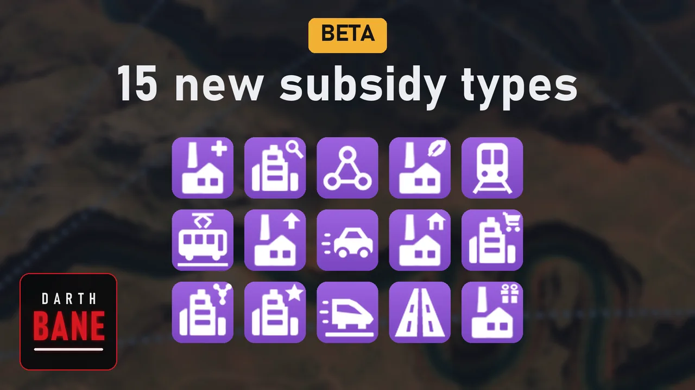

<title>Transport Fever 3 Mods</title>
<meta name="claude:viewport-fit-sides" content="cover">
<link rel="icon" href="data:image/svg+xml,%3Csvg xmlns='http://www.w3.org/2000/svg' viewBox='0 0 64 64'%3E%3Crect width='64' height='64' rx='12' fill='%231b1f26'/%3E%3Ctext x='32' y='49' text-anchor='middle' font-family='Arial Narrow,Arial,sans-serif' font-weight='700' font-size='44' fill='%23ffffff'%3ED%3C/text%3E%3C/svg%3E">
<link rel="preconnect" href="https://fonts.googleapis.com">
<link rel="preconnect" href="https://fonts.gstatic.com" crossorigin>
<link rel="stylesheet" href="https://fonts.googleapis.com/css2?family=Barlow+Condensed:wght@600;700&family=Barlow:wght@400;500;600&family=IBM+Plex+Mono:wght@400;500&display=swap">
<style>
/*SITE_CSS*/
/* Overview: one large panel per mod, its picture on top, linking to its guide. */
.brand h1 .docs { color: var(--muted); font-weight: 600; margin-left: 0.25em; }
.mods { display: grid; grid-template-columns: repeat(auto-fit, minmax(min(100%, 26rem), 1fr)); gap: 1.25rem; padding-block: 1rem 3rem; }
.mod-card {
  display: flex; flex-direction: column; color: var(--ink); text-decoration: none; overflow: hidden;
  background: var(--panel); border: 1px solid var(--rule); border-radius: 12px;
}
.mod-card:hover, .mod-card:focus-visible { border-color: var(--tile); box-shadow: 0 0 0 1px var(--tile); }
.mod-card img { width: 100%; height: auto; aspect-ratio: 16 / 9; object-fit: cover; display: block; background: var(--paper); }
.mod-card .text { display: flex; align-items: baseline; justify-content: space-between; gap: 0.5rem 1rem; flex-wrap: wrap; padding: 1rem 1.25rem 1.2rem; }
.mod-card h2 { font-family: var(--display); font-weight: 700; font-size: clamp(1.8rem, 4vw, 2.3rem); line-height: 1; margin: 0; }
.mod-card p { margin: 0; color: var(--muted); font-size: 1.05rem; }
</style>

<!--SITE_NAV-->

<header class="top wrap">
  <div class="brand">
    <h1>Transport Fever 3 Mods<span class="docs">Guides</span></h1>
  </div>
</header>

<main class="wrap mods">
  <a class="mod-card" href="./subsidies-plus/">
    
    <div class="text"><h2>Subsidies+</h2><p>15 new subsidies</p></div>
  </a>
  <a class="mod-card" href="./waste-industry/">
    
    <div class="text"><h2>Waste Industry</h2><p>Waste bins, landfills, incineration, recycling</p></div>
  </a>
</main>

<footer class="wrap">
  <p>The mods are on mod.io; these pages explain how they work.</p>
</footer>
